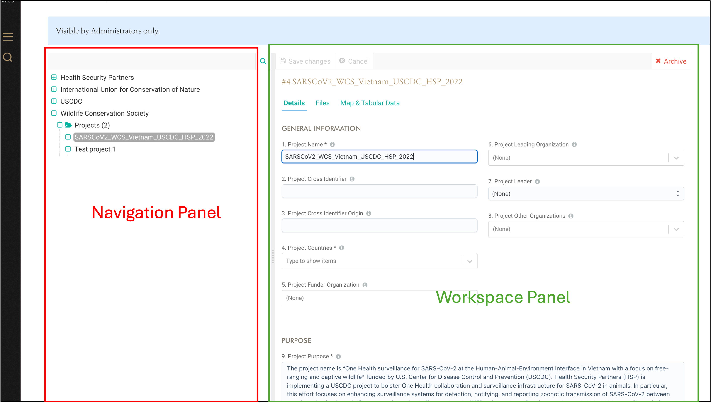
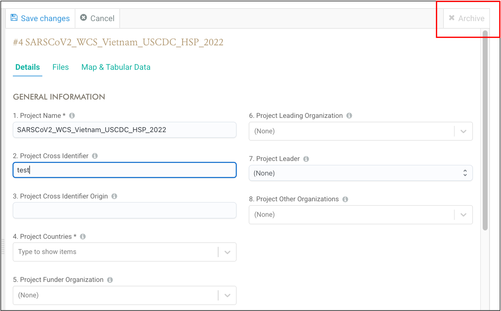
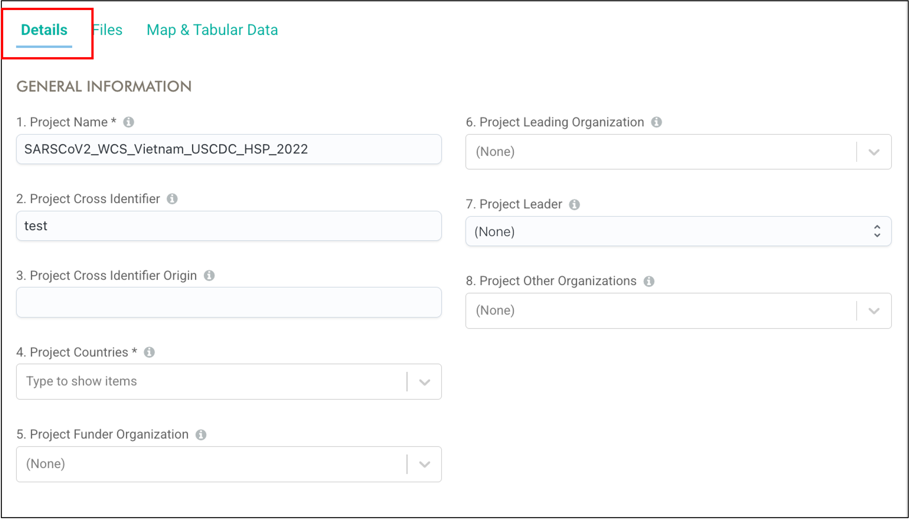
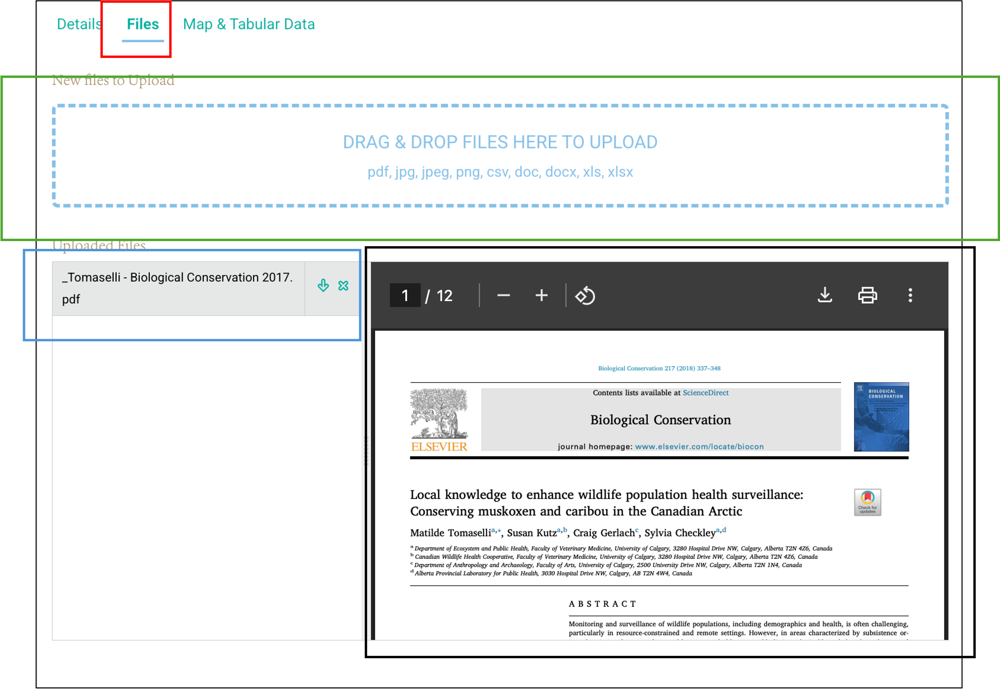
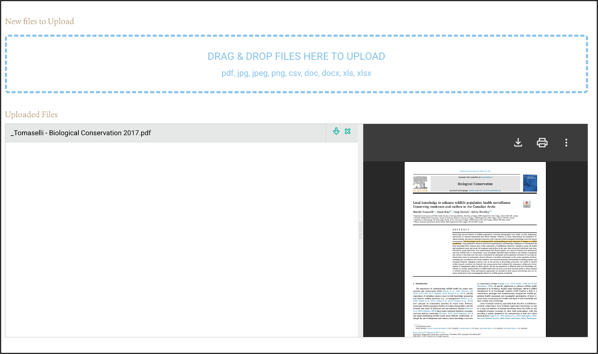
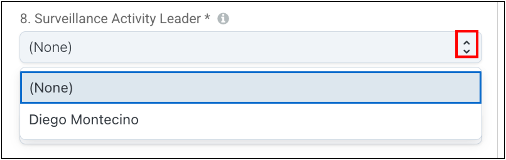

Unit | Columns |
|---|---|
Project | Project ID |
Project Name | |
Surveillance Activity Names | |
Surveillance Activity | Project ID |
Project Name | |
Surveillance Activity ID | |
Surveillance Activities Name | |
Field Visit Names | |
Field Visit | Project Name |
Surveillance Activity Name | |
Field Visit ID | |
Field Visit Name | |
Field Visit Star Date | |
Field Visit End Date | |
Location Cluster Names | |
Location Names | |
Location | Project Name |
Surveillance Activity Name | |
Field Visit Name | |
Location Cluster Names | |
Location ID | |
Location Name | |
Event Cluster Names | |
Event IDs | |
Event | Project Name |
Surveillance Activity Name | |
Field Visit Name | |
Location Cluster Names | |
Location Name | |
Event Cluster Names | |
Event ID | |
Event Date | |
Collection IDs | |
Source IDs | |
Collection | Project Name |
Surveillance Activity Name | |
Field Visit Name | |
Location Cluster Names | |
Location Name | |
Event Cluster Names | |
Event ID | |
Event Date | |
Collection ID | |
Collection Method | |
Source IDs | |
Source Record | Project Name |
Surveillance Activity Name | |
Field Visit Name | |
Location Cluster Names | |
Location Name | |
Event Cluster Names | |
Event ID | |
Event Date | |
Collection ID | |
Source ID | |
Source Type | |
Source Record Cluster Names | |
Record Number | |
Initial Health Status | |
Necropsy ID | |
Specimen IDs | |
Specimen Type | |
Specimen | Project Name |
Surveillance Activity Name | |
Field Visit Name | |
Location Cluster Names | |
Location Name | |
Event Cluster Names | |
Event ID | |
Event Date | |
Collection ID | |
Source ID | |
Source Type | |
Source Record Cluster Names | |
Record Number | |
Specimen ID | |
Specimen Type | |
Diagnostic IDs | |
Diagnostic Targeted Hazard | |
Diagnostic Result | |
Diagnostics | Project Name |
Surveillance Activity Name | |
Field Visit Name | |
Location Cluster Names | |
Location Name | |
Event Cluster Names | |
Event ID | |
Collection ID | |
Source ID | |
Source Type | |
Source Record Cluster Names | |
Record Number | |
Specimen ID | |
Diagnostic IDs | |
Diagnostic Targeted Hazard | |
Diagnostic Result | |
Diagnostic Date Sent | |
Diagnostic Date Received | |
Diagnostic Result |
The WildHealth Database – WHeDB
WHeDB stands for “WildHealth Database”, and it is a user-friendly web-based database designed to manage wildlife health data. Data in WHeDB are structured following a versatile data model created by the Data Task Force within the Wildlife Health Intelligence Network (WHIN), a global community of practice for growing wildlife health surveillance. WHeDB can effectively manage data generated by wildlife health surveillance systems, research, and public initiatives under one structure. Examples include typical morbidity/mortality investigations, opportunistic findings such as reports of dead animals by the public or in social media; testing of samples from captured, marked, and recaptured animals; multilevel study designs; and transect survey observations among others. WHeDB is maintained by Wildlife Conservation Society’s Health and Conservation Technology Programs, based in Bronx, New York, United States.
In this manual, we Capitalize and bold nouns such as Projects, Surveillance Activities, Field Visits, Locations, Events, Sources, and Specimens when they refer to specific WHeDB data units.
This manual focuses on general user functionalities. To learn more about administrator account functionalities, refer to the “WHeDB Administrator Account Manual” (under construction).
Structure of the Wildlife Health Data in WHeDB and Data Units
This manual provides a summary of the data structure in WHeDB. For a full description, visit the website describing the data model link. Briefly, WHeDB has “data units”: Project, Surveillance Activity, Field Visit, Location, Event, Source Record, Collection, Specimen, Diagnostic, and Interpretation, and Clusters. Projects identify a specific Project leader and information. Under Projects are Surveillance Activities that are executed following a methodology documented in a standard metadata format. Surveillance Activities are conducted through Field Visits that encompass a period during which Locations (i.e. study sites) are surveyed. These Locations contain Events, epidemiological units with a spatiotemporal coordinate that can contain four types of Sources: group of animals of the same species (Group), individual animals (Animal), Collection of arthropods (Arthropod), or environmental sampling (i.e., water or feces; Environmental). Sources at time t are Source Records that can be obtained through a Collection that involves an effort to obtain information during an Event (i.e. mist net) or not.
Locations, Events, and Sources can be grouped in further temporal and spatial Clusters when needed, based on the specific requirements of a study design. What Location, Event, and other Cluster data units represent must be documented for and consistently applied within each Surveillance Activity, but these data units can vary among Surveillance Activities.
The four categories of Sources provide Specimens cross-sectionally or longitudinally. Necropsy of animal carcasses can be documented. Live or dead Animals and Specimens can be tested using Diagnostics for biological (i.e. pathogens), physical (heat stroke), chemical (i.e. heavy metals), and physiological (i.e. cardiomegaly) targets. Diagnostics can be conducted in a Laboratory. Specimens and Diagnostics can generate new Specimens if they are pooled or if their products are used in subsequent tests, respectively. Finally, each Diagnostic, tested Specimen, and tested Source (directly or through Specimens) receives an Interpretation for the target of interest following documented case definitions. The data model also supports the administration of Specimen or carcass storage or and shipments.
Depending on the study design, Surveillance Activities may only contain Field Visits up to Events (i.e. observation of a site with pollution without sample Collection and animal morbidity and mortality) or up to Source Records only (i.e. mortality observations). It is also possible that a Surveillance Activity contains Specimens and Diagnostics only or Source Records, Specimens, and Diagnostics only. In the first case, stored Specimens collected under a previous Surveillance Activity are used in a second Surveillance Activity and tested for health hazards. In the second case, a stored carcass collected under a previous Surveillance Activity generates new Specimens that are tested for health hazards.
The data structure allows for cases when Field Visits or Locations end without any Event; Events, Collections, and Sources end without any Source Record; Source Records end up without any Specimen; Specimens end up without any Diagnostics; and Diagnostics end up without an Interpretation.
For other potential options and the full set of relationships among these data units please visit WHeDB data model manual link.
We encourage a modular approach for each system implementing WHeDB, starting with the foundational frame and only adding additional components as needed.
Account Types
WHeDB has four types of accounts: General Administration, Organization Administrator, and General User.
General Administrator Account (under construction)
These accounts are assigned internally by the Wildlife Conservation Society. There are two General Administrators (see WHeDB website [under construction] to learn more). General Administrators support the maintenance of the database across all accounts linked to at least one Organization (see below), they authorize the creation of Organization accounts (see next), establish Organization Administrators based on requests (see below), and communicate with Organization Administrators to solve technical issues, report updates and bugs, etc.
Organization Account (under construction)
The first step to begin using WHeDB is to request an Organization account. Organization accounts contain as many Projects as needed, and they can only be accessed by authorized Organization Administrators and General Users. Organization accounts manage data for their Surveillance Activities.
Organization Administrator (under construction)
Organization Administrators can view, edit, delete, and export all data controlled by the corresponding Organization (all data across all Organization Projects). Organization Administrators can accept or reject General Users (see below) under the corresponding Organization. Organization Administrators can assign General User different data permissions (i.e. view, edit, delete, export) from Projects to Interpretations per Surveillance Activity within the Organization account. Organization Administrators can also modify these permissions, authorize the creation of new Projects under the corresponding Organization account, communicate with General Administrators, restore deleted data (see below), and access data changes logs (see below). Two Organization Administrators per Organization account are accepted. For more details see “WHeDB Administrator Account Manual” (under construction).
General User (under construction)
General User accounts belong to specific individuals. General Users are granted data view, edit, delete, and export permissions from Projects to Interpretations per Surveillance Activity within the Organization, by Organization Administrators. General Users can also receive “Project Creation” permissions. Therefore, General Users can be granted data viewing permissions for Surveillance Activity 1 in Project A; export permissions for Surveillance Activity 2 in Project A; no access to Project B data; and have edit data permissions for all Surveillance Activities in Project C.
General Users must be granted access to an Organization; however, the same General User can be accepted in several Organizations and be upgraded to Organization Administrator by current Organization Administrators.
Creating and Modifying Accounts (under construction)
Organization Account
General Administrators review new Organization requests. To request a new Organization, a representative or individual completes the ‘Organization request form’ (under construction) which includes contact information for an Organization Administrator. The representative or individual requesting the Organization account will be contacted via email as soon as possible. Once created the Organization Administrator listed in the request form takes control of the Organization account.
WHeDB is designed to remain accessible and sustainable as a public good to encourage widespread use. Critically, when local funding is unavailable, Global South users will be accommodated at no charge, subject to reasonable usage limits. Global South users with funding are encouraged to share their capacity to support database maintenance and ensure the long-term use and storage of data.
Organization Administrator Account
These accounts are established by General Administrators based on petitions made by the Organization representative or individual requesting the new Organization Account (see above). General Users with access to the corresponding Organization can be upgraded to Organization Administratorsby existing Organization Administrators. Organization Administratorscan also be converted to General Users.
Instructions to convert an Organization Administrator to a General User are given in “WHeDB Administrator Account Manual” (under construction).
General User Account
To create a new General User for a specific Organization, the individual interested in having a General User account completes the “Insert title of form (under construction)”. Once the form is submitted, the individual receives an email with the subject, “WHeDB Organization Access Request Confirmation”. The request is reviewed by the corresponding Organization Administrator. Once approved by the Administrator, the new General User will receive a second email with the subject, “Your Access to the [Organization name] WHeDB Account Has Been Accepted”. This second email confirms the account is ready to be used.
General Users can be authorized to access other Organizations. To obtain access authorization to other Organizations, General Users must follow these steps (under construction):
General User access and permission to each Organization are set by the respective Organization Administrators.
Instructions to upgrade a General User to an Organization Administrator are provided in the “WHeDB Administrator Account Manual” (under construction).
General Users Navigating the WildHealth Database
Logging in to the Web-based User Interface (under construction)
Organization Administratorsand approved General Users access WHeDB by opening this link on a Chrome web browser and providing their username and password. WHeDB software is optimized for Chrome and may not work on other browsers:
Initial Screen
Once successfully logged on, the Graphical User Interface (GUI) appears. The GUI has two panels that are always available. On the left side of the screen is the Navigation Panel (red frame in the image below). On the right side is the Workspace (green frame in the image below):

The Navigation Panel shows all the Organizations that a user has access to. The relative size of the Navigation and Workspace Panels can be adjusted by selecting the divider bar separating the two panels (red frame in the figure below) and dragging it to the left or right. Compare the two images below:

Horizontal and vertical scroll bars appear to aid independent navigation of the Navigation and Workspace Panels.
The Workspace Panel
The Workspace Panel has the buttons “Save changes” and “Cancel” on the top left. These buttons are always displayed and are inactive or active depending on the addition or modification of data units.
The button “Save changes” is grey when inactive and blue when active. The “Cancel” button is grey when inactive and dark grey when active. These buttons are inactive by default but become active when:
- A field of an existing data unit is modified, or a new file is added to an existing data unit (see “Manipulating Data to WHeDB” section below). Compare the red frame in the two images below showing the switch from inactive to active buttons. The first image shows a saved data unit as currently stored with inactive buttons:
In the second image below, field 2 has been modified and the buttons are now active:
- A new data unit is being created but not saved yet (see “Manipulating Data to WHeDB” section below). Although the “Save changes” button is active, an error message will appear if mandatory fields are not completed:
The Workspace Panel also has an “Archive” button on the top right. This button is only displayed when working on existing data units. This button is active (red) when:
- An existing data unit is opened, and it has not been modified (no editing of fields, or addition or removal of files):
This button is inactive (grey) when an existing data unit has been modified but these changes have not yet been saved:

The “Archive” button does not appear when a new data unit is being created.
The Workspace Panel’s three tabs: “Details”, “Files” and “Map & Tabular Data” are described in the next sections.
The Workspace Panel - Details Tab
The “Details” tab (red frame below) contains the variables that characterize each data unit. Existing data units contain filled fields whereas new unit fields will be blank:

Users navigate across this tab by scrolling up and down. Fields are editable (active) or not. Non-active fields are grey and cannot be editable (read only; under construction). Read only fields may occur when a user does not have edit permissionn or when there are dependencies (i.e., if a Project does not have chemical hazards, then it is not possible to select a specific toxin. See “Mandatory and Conditional Fields” below). Fields are logically ordered; the order is retained even as the Workspace Panel is modified. Compare the two images below:
The Workspace Panel - Files Tab
The “Files” tab receives and stores files associated with the selected data unit. WHeDB supports many file extensions (e.g. images, pictures, videos, pdf, docx, xlsx, csv, json, shp, etc). When files have been added to a data unit, the “Files” tab lists them in the “Uploaded Files” area (blue solid frame in the image below). The “Drop the Files to Upload” area attaches files (green frame in the image below) to the selected data unit (see “Adding a New Data Unit” section below).

The “Preview” tool displays a file (black frame in the image below) selected from the list of uploaded files. When no files are associated with the data unit, the “Uploaded Files” area and the “Preview” tool are not displayed.
The relative size of the “Uploaded Files” and “Preview” tool can be modified by selecting and dragging the bar separating them to the left or right. Compare the two images below:

The Workspace Panel - Map & Tabular Data Tab
The “Map & Tabular Data” tab displays a data unit’s spatial data (black frame in the image below) and tabular information with the relationships with the corresponding parent and children data units:

For a Project, the Map shows all Events across its Surveillance Activities, while the Table shows the Project ID and the corresponding Surveillance Activity IDs. The tabular data at the Specimens level include the IDs of its parents: the Project ID, Surveillance Activity ID, Field Visit ID, Location ID, Collection ID, Event ID, and Source Record ID. It also shows the Specimen ID; and finally, its children, Diagnostics ID.
The specific content displayed for each data unit is shown below in Table 1:
The data displayed in this tab cannot be directly modified. The content of the “Map & Tabular Data” changes based on the data unit’s content in the “Details” tabs.
System and User-Provided Identifiers
Data units in WHeDB, from Organizations to Interpretations, have at least one identifier. All data units receive an “ID”, a system-based identifier unique for each data unit. This field is automatically assigned by the database once a data unit is saved. “Code” fields (i.e., Surveillance Activity Code) are user-provided identifiers for those data units. “Name” fields are a third type of identifiers for specific data units (see online Data Dictionary) that receive a user-provided name of a data unit (i.e., “Field Activity Name”).
Field Definitions
In addition to the data model dictionary, the definition of each field can be found in the GUI. To view the definition, select the “i” or information icon that appears to the right of each field header:
Data Types for Fields in WHeDB
WHeDB supports different data types for fields. This allows WHeDB to accommodate the wide range of variables associated with wildlife health surveillance.
Integer
These fields require an integer number. Integer fields have up and down arrows to increase and decrease the value, or it can also be entered directly. For example, the number of adult male individuals observed sick or injured in a Group Source (under construction):
Floating
These fields expect a non-integer number. Non-Integer fields must be entered directly. For example, the number of traps-hours in a night (under construction):
Date
These fields require a date. The date can be entered directly using the mm/dd/yyyy format. Alternatively, the date can be entered using the calendar icon to the right of the field. For example, the “Start Date” of a Project:
After selecting the calendar icon, a calendar appears. The left and right arrows (blue frame in the image above) change the month sequentially backward and forward in time, respectively. The down arrows (red frame in the image above) help select a specific month and year. The home icon (green frame in the image above) resets the calendar to the current date. Enter the specific date by navigating to the correct month, year, and date and selecting it (black frame in the image above). The database will display an error message when the month value is larger than 12 and when the day value exceeds the possible number for the corresponding month (i.e., February 30th).
Boolean
These fields request a “Yes” or “No” answer. For example, the field “Project Group Source” of the “Project” fields:

Single-choice List
These fields are completed by selecting one response from a list of fixed options. These fields have navigation arrows on the right that when selected open a list of options. Select a response from the list using the cursor. For example, the “Surveillance Activity Leader” field of Surveillance Activities (the red frame indicates the navigation arrows):

Multi-choice List
These fields accommodate one or more responses from a list of fixed options. These fields have a down arrow icon on the right. After selecting that icon, a list of options appears. One or more responses can be selected using the cursor. For example, the “Project Funder Organization” field of Project (the red frame indicates the up and down arrow):
Text
These fields are text boxes and are used for long-form or free text written response. For example, the “Surveillance Activity Purpose” field of Surveillance Activities:
Active, Conditional, and Mandatory Fields in WHeDB
Active Fields
Fields in the “Details” tab that can be edited are active. Not active or read only fields are grey in color. This may be the case if a user does not have edit permission or because of field dependencies (see next).
Conditional Fields
Some fields are inactive until previous fields are answered or receive a specific response. These Conditional fields minimize data entry by only requesting the additional specific details when required (i.e., if a Project does not include chemical hazards, then the specific toxin field remains inactive).
Mandatory Fields
Mandatory fields are indicated with an asterisk:
Active Mandatory fields must be completed to save changes to the data.
Adding Data in WHeDB
Adding a New Data Unit
The addition of data to WHeDB follows the same process across all data units. To add data units:
Navigate to the data unit folder where are a new unit is to be added
Select its folder icon and a “+ Add [data unit name]” button will appear in the top left corner of the Navigation Panel (i.e., “Add Project”):
Select the button and a “New Record” with the three fixed tabs: “Details”, “Files”, and “Map and Tabular data” appears in the Workspace Panel. The “Details” tab is first by default (see red frame in the image below). As the data unit is new, all the fields in this tab are empty:
Once the mandatory fields are completed, the new data unit can be saved by selecting “Save Changes”, located in the top left of the Workspace Panel:
Adding a new data unit requires completion of the mandatory fields. Nonmandatory fields can be completed, and files can be added (see next section) after the creation of the data unit, during the creation of the data unit, or not added at all.
Active fields that are being completed or edited are highlighted with a blue frame. Compare the fields in the images below:
Adding Files to a Data Unit
To add files to a data unit:
Navigate to the “Files” tab by selecting the “Files” button of the Workspace Panel. Initially, the “Files” tab will only show a “Drop the Files to Upload” box bordered with a light-blue dashed contour (see image below):
Upon moving the cursor to the “Drop the Files to Upload” the area will turn light blue. Select anywhere in the box, an explorer window to browse files on the computer will open:
Select the file to upload followed by the “Open” button of the explorer window. A list will appear with the new file(s) uploaded displayed directly below the “Drop the Files to Upload” box. These files are not yet saved in WHe-DB but are rather queued for the user to confirm they are the correct files before saving:
Alternatively, drag the files to upload from your computer and drop them in the “Drop the files to Upload” area.
To save the files, select the “Save changes” button in the upper left corner of the Workspace Panel. The list of the uploaded files attached to the data unit is displayed to the left of the Workspace Panel (the “Upload Files” area). Once one or more files are saved to a data unit the “Preview” tool will appear to the right of the Workspace Panel. A selected file (“Upload Files” area in the red frame on the image below) that has a compatible extension will appear in the “Preview” tool. The selected file will have a darker grey file name than others is the list.
The “Save changes” button is inactive (grey) when all files are saved. Add new or additional files to any data unit following the steps provided above.
Adding a New Project to an Organization
To add a new Project to an Organization, navigate to the Project folder under the corresponding Organization, select the folder and then click “Add Project” in the top left corner of the Navigation Panel. Complete the mandatory fields in the Workspace Panel and select the “Save Changes” button. Most Project fields are metadata. The definition of each field is provided in the online Data Dictionary or by selecting the “i” icon or information to the right of the field names in the “Details” tab.
Adding a New Surveillance Activity to a Project
To add a new Surveillance Activity to a Project, navigate to the Surveillance Activity folder under the corresponding Project, select the folder and then “Add Surveillance Activity” in the top left corner of the Navigation Panel. The addition of a Surveillance Activity is the most time–consuming step of data entry. These fields are also the most important because they document the methods employed to conduct the activity, including Source Specific metadata and Cluster specific metadata.
Therefore, the addition of a Surveillance Activity is broken into three parts. The first part captures information about who, when, where, what, why, and how of the Surveillance Activity (under construction):
The second part documents the specific methods or way information was collected for each Source type. A Surveillance Activity can include between one to four different types of Sources (Group, Animal, Environmental, and Arthropod Sources). Each Source type included in the Surveillance Activity requires completion of a specific set of fields (under construction):
The third part is only necessary when Source Records, Events, or Locations are nested or grouped in either spatial or temporal Clusters in the Surveillance Activity. When used these fields help document the structure of the Clusters.
In the case of Source Records: (under construction)
In the case of Events: (under construction)
In the case of Locations: (under construction)
The data dictionary and the “i” or information icon provide additional guidance on completing the fields in part three.
Adding a New Field Visit to a Surveillance Activity
To add a new Field Visit to a Surveillance Activity, follow the instructions in “Adding a New Data Unit”.
Adding a New Location to a Field Visit
To add a new Location to a Field Visit, follow the instructions in “Adding a New Data Unit”.
Adding an New Event to a Location
The Event data contains the spatial and temporal coordinates. Coordinates can be entered in decimal degrees (DD); degrees, minutes, and seconds (DMS); or Universal Transverse Mercator (UTM). The coordinate system selected will determine what spatial coordinate information is required. For DMS:
For DD:
For UTM:
The database documents the original coordinate system and automatically converts to the other coordinate systems.
The red pin on the map in the “Map & Tabular Data” tab can be moved to a new Location using the cursor and the left button of the mouse (select the pin, then drag and drop the pin at the new desired Location). Moving the pin modifies the associated fields, including the latitude, longitude, country, etc (under construction).
The field “Event Coordinate Source” documents the accuracy of the spatial coordinates. For example, if the coordinates were obtained with a GPS device, calculated based on the distance to a Location with known coordinates, or estimated by pointing a site in a digital map and recovering the coordinates returned by the digital map (i.e., Google Earth or moving the pin in the database map to a specific site):
Adding a Collection to an Event
Collections are added to Events when there is an “effort” to obtain Sources Records from the field. A Collection can include a spatial effort (i.e., the distance travelled to the site of an Event), and a temporal effort (i.e., the time a trap is deployed) to obtain Source Records. Opportunistic findings do not have an effort. A temporal effort can either begin or end at the time an Event starts (i.e., hours since the Event starting time). The spatial effort can either begin or end at the spatial coordinates of the Event (i.e., distance walked to the latitude/longitude of the Event). Collections occur at an Event, but an Event can contain several Collections (i.e., two mosquito traps, a mist net, and an air filter at the “same” Event).
When an Event contains Collections, a series of fields to document the effort to obtain Source Records are available, including the effort unit (i.e., meters, hours, etc.), the effort quantity (a number), and the spatial and temporal position of the effort with respect to the Event spatio-temporal coordinates (i.e., since the Event started):
For more details, refer to the Data Model Manual.
Adding Source Records to a Collection or Event
Source Records are added to a Collection data unit if an effort is involved. Otherwise, the Source Records are added directly to the corresponding Event. To add a Source Record in both cases, it is necessary to complete a set of fields common across Source types and then a series of Source-type-specific fields. These specific fields are active after selecting the type of Source being added.
For example, for Group Source Records, the number of individuals per species, health status, sex, and age are displayed and active (under construction):
For Animal Source Records, vaccination, carcass condition, carcass action, and identification markers are displayed and active (under construction):
For Environmental Source Records, the species of origin, the quantity metric, and the quantity are displayed and active (under construction):
For Arthropod Source Records the number of arthropods per age, sex, and condition of the females; and the accuracy of the number reported are displayed and active (under construction):
Adding a Carcass to a Necropsy
(under construction)
Adding a Necropsy to a Carcass
(under construction)
Adding Specimens to a Source Record
Specimens are used for Diagnostics. Specimens originate from the following:
A sampled Source Record (i.e., an oral swab from an individual animal; the Specimen within the green boxes in figure below)
A Diagnostic Product created by running a Diagnostic on a Specimen that can be used in further Diagnostics (i.e., cDNA created from RNA in a sample; the Specimens within the pink boxes in the figure below)
Other Specimens (Pooled Specimen). For example, different Specimens from the same or multiple Source Records are mixed (grey boxes in figure below)
Notably, a Specimen that includes different tissue from the same Source Record, but the different tissues have not been entered in the database as individual Specimens is not a Pooled Specimen, but a Specimen of “mixed tissue” type.
Each Specimen belongs to one or more Source Record(s) depending on its origin. In WHeDB, Specimens originating directly from a Source Record are in the folder called “Specimens from Source Records” (under construction):
Specimens originating from a Diagnostic Product are in the folder called “Specimen from Diagnostic Products” (under construction):
Pooled Specimens belong to each Source Record involved in their generation. Consequently, in WHeDB, a Pooled Specimen can be found in the “Pooled Specimens” folder under either the “Specimens from Source Records” folder and/or “Specimen from Diagnostic Products” folder of each Source Records involved in the generation of the Pooled Specimen (under construction):
Specimens’ characteristics include the type (Source Record, Diagnostic Product, or Pooled Specimen), the tissue type, the quantity, and fields associated with its current storage and shipment processes:
Adding Specimens to a Source Record – From Source Records
Specimens are added to a Source Records data unit, specifically to the “Specimens from Source Records” folder if they were taken directly from the Source (i.e., “oral swab”). Navigate to the “Specimens from Source Records” folder under the corresponding Specimen, select the folder and then click “Add Specimen” in the top left corner of the Navigation Panel. Complete the mandatory fields in the Workspace Panel and select the “Save Changes” button.
Adding Specimens to a Source Record – From Diagnostic Products
Specimens are added to a Source Records data unit, specifically to the “Specimens from Diagnostic Products” folder if they are a product of a Diagnostic conducted with a Specimen directly collected from a Source Record (i.e., cDNA generated after the genetic material in an “oral swab” is amplified after a RT-PCR Diagnostic). Navigate to the “Specimens from Diagnostic Products” folder under the corresponding Specimen, select the folder and then click “Add Specimen” in the top left corner of the Navigation Panel. Complete the mandatory fields in the Workspace Panel and select the “Save Changes” button (under construction).
Adding Pooled Specimens to a Source Record – Pooled Specimens
In the database, Pooled Specimen parents are the Specimens included in the Pooled Specimens. Therefore, a Pool Specimen data unit must be added to the corresponding “Pool Specimen” folder of each Specimens from Source Records or from Diagnostic Products that provide content for the new pooled Specimen. In the figure above, the Pooled Specimen (grey box) should be added to the “Specimens from Source Records” folder of the “Source Record” in the green box, and also to the “Specimens from Diagnostic Product” folder of this Source Record (the Diagnostic Product Specimen in the pink box also creates the Pooled Specimen).
To add a Pooled Specimen, select the correct folder and then click “Add Pooled Specimen” in the top left corner of the Navigation Panel. Complete the mandatory fields in the Workspace Panel and select the “Save Changes” button (under construction).
Adding Diagnostics to a Specimen
To add a Diagnostic to a Specimen, navigate to the “Diagnostic” folder under either the “Specimens from Source Records”, “Specimens from Diagnostic Products”, or “Pooled Specimens” folder, select the folder and then click “Add Diagnostic” in the top left corner of the Navigation Panel. Complete the mandatory fields in the Workspace Panel and select the “Save Changes” button. Diagnostic information includes the type and name of the Diagnostic test, the targeted hazard (i.e., “Virus”), and the hazard name (i.e, “SARS-CoV_2”; under construction):
Uploading a file to support the output of a Diagnostic is best practice and strongly encouraged. For example, an electrophoresis gel image of amplified genetic products, including negative and positive controls, alongside a ladder showing bands in the expected wells and sizes:
Adding Diagnostics to Group or Animal Source Records
Diagnostics can be added directly to a Group Source or an Animal Source. For example, a hazard can be evaluated in a group of toads (i.e., skin disease, other). An Animal Source can undergo an MRI or another Diagnostic based on a whole individual. To add a Diagnostic to a Group or Animal Source Record, navigate to the “Diagnostics” folder linked to the Source Record directly, select the folder and then click “Add Diagnostic” in the top left corner of the Navigation Panel. Complete the mandatory fields in the Workspace Panel and select the “Save Changes” button (under construction).
Adding an Interpretation to a Diagnostic (under construction)
Adding an Interpretation to a Specimen (under construction)
Adding an Interpretation to a Source Record (under construction)
Adding Existing Data Units to Other Surveillance Activities
Surveillance Activities might use existing data units that belong to other Surveillance Activities. For example, a new Surveillance Activity could test archived Specimens for SARS-CoV-2 from another Surveillance Activity that was originally only focused on HPAIV. In this case, the Specimens are added to this new Surveillance Activity (i.e., now testing the Specimens for SARS-CoV-2).
Another example is the sampling of the same bats but for two different objectives: different Diagnostics tests. In this case, a single Field Visit, Location, Event, Collection, Source Record, and Specimen belong to two different Surveillance Activities, whilst the Diagnostics for the first objective and the Diagnostics associated with the second objective belong to one of the Surveillance Activities (see “Complexities” in the Data Model Manual for more details).
To add existing data units to a new Surveillance Activity (under construction):
Create the new Surveillance Activity that will use the existing data
Navigate to the new Surveillance Activity in the Navigation Panel
Navigate to the data unit folder corresponding to the data unit level to be added to the new Surveillance Activity (i.e., navigate to the Specimen folder under the new Surveillance Activity):
Select the corresponding folder
Select the activated button “Add [data unit name]” (i.e., “Add Specimen”) on the top left of the Navigation Panel
Start typing the Specimen Code of the archived Specimen
Select the correct Specimen Code
Save changes by selecting the “Save changes” button in the top left corner of the Workspace Panel
Adding a Source directly to a Surveillance Activity
If the Surveillance Activity involves a mark-recapture methodology, i.e., released marked Animal Sources that are then recaptured during Field Visits of the Surveillance Activity, it is possible that some marked Sources are never recaptured. In this case, the Sources will not be linked to any Field Visit, Location, Event, or Collection but they still need to be linked to the corresponding Surveillance Activity. To add a Source directly to a Surveillance Activity without any other data unit (no Field Visit, Location, Event, etc.), the user navigates to the “Source” folder under the corresponding Surveillance Activity and adds the corresponding Source data unit following the guidance in section “Adding a New Data Unit” (under construction).
Cancelling the Addition of Data in WHeDB
Cancelling the Addition of a Data Unit
To cancel the addition of a data unit,
Select the “Cancel” button above the Workspace Panel at any time before the data unit is created. The data unit is created only after the “Save Changes” is selected:
Cancelling the Addition of a File to a Data Unit
To cancel the addition of a specific file to a data unit,
Find it in the list of files below the “Drop the Files to Upload” box and select the “X” or cancel button on the right of the file name (red frame in the image below):
The file will be removed from the list.
Clustering Data Units in WHeDB (under construction)
Clustering Locations
If Locations are grouped in either spatial units, nested or non-nested, that are smaller than the corresponding Field Visit, or in temporal units, they can be assigned to Clusters. The fields to add the Location to the corresponding Clusters will be active after reporting the grouping of Locations in the corresponding Surveillance Activity:
To include a Location in nested spatial Clusters
To include a Location in a non-nested spatial Clusters
To include a Location in nested temporal Clusters
To include a Location in a non-nested temporal Clusters
Clustering Events
If Events are grouped in either spatial units, nested or non-nested, that are smaller than the corresponding Locations, or in temporal units, they can be assigned to Clusters. The fields to add the Event to the corresponding Clusters will be active after reporting the grouping of Events in the corresponding Surveillance Activity:
To include an Event in nested spatial Clusters
To include an Event in a non-nested spatial Clusters
To include an Event in nested temporal Clusters
To include an Event in a non-nested temporal Clusters
Clustering Source Records
If Source Records are grouped in either spatial units, nested or non-nested, that are smaller than the corresponding Event, or in temporal units, they can be assigned to Clusters. The fields to add the Source Record to the corresponding Clusters will be active after reporting the grouping of Source Record in the corresponding Surveillance Activity:
Clusters of Source Records can contain Source Records of any type.
To include a Source Record in nested spatial Clusters
To include a Source Record in a non-nested spatial Clusters
To include a Source Record in nested temporal Clusters
To include a Source Record in a non-nested temporal Clusters
Viewing Data in WHeDB
To view specific data, navigate through the data units in the Navigation Panel until finding the data unit of interest. View either the data unit fields, files, the contextual information, or the spatial distribution of a specific data unit in the “Map and Table” tab of the Workspace Panel.
Quick Search (under construction)
Editing Data in WHeDB
Editing a Data Unit
To edit the fields of a data unit or modify the files associated with a data unit, users with editing permissions navigate through the data units in the Navigation Panel until finding the data unit of interest. Then, follow the instructions provided in section “Adding a New Data Unit in WHeDB”. Once the edits are completed, select the “Save Changes” button on the top left of the Navigation Panel. Edits made can be cancelled if the changes made have not been saved. To cancel follow the instructions provided in section “Cancelling the Addition of a Data Unit in WHeDB”.
Editing Files of a Data Unit
To add new or additional files to a data unit, follow the instructions provided in the section, “Adding Files to a Data Unit”. To cancel the addition of files, follow the instructions provided in the section “Cancelling the Addition of a File to a Data Unit in WHeDB”. To delete files uploaded or saved to a data unit, see the next section.
Deleting Data in WHeDB
Deleting a Data Unit
To delete a data unit, navigate to the corresponding data unit using the Navigation Panel and select it. The Workspace Panel has an “Archived” button on the top right corner (red frame in the image below):
To delete the data unit, select the “Archive” button. A window will pop-up to confirm the action to ‘Archive’ or to “Cancel & Close” the deletion of the data unit:
Confirm the archiving of the data unit by selecting “Archive” or “Cancel & Close” to cancel the archiving of the data unit
Deleting Files of a Data Unit
To delete files of a data unit, navigate to the corresponding data unit using the Navigation Panel and open. Then, open the “Files” tab in the Workspace Panel and find the “Uploaded Files”:
To delete the file, select the “X” button to the right of the file name:
A window will pop-up to confirm or cancel the deletion of the data unit. Confirm the deletion of the file by selecting “Delete” or “Cancel & Close” to cancel the deletion of the file:
Exporting Data from WHeDB (under construction)
Exporting Data Table
Data from archived data units are not exported.
Downloading Files
Files associated with data units can be downloaded. To download files of data units, navigate to the corresponding data unit using the Navigation Panel and open Then, open the “Files” tab in the Workspace Panel and find the “Uploaded Files”.
To download a file, select the down arrow icon to the right of the file name:
A window to browse the download Location and name the file will pop-up.
Closing an Organization Account
Organization Accounts can be closed for two reasons: i) one of the Account Administrator requests the Organization Account to be closed or ii) the Organization Account has been inactive for four years. In the first case, the General Administrators of WHeDB will reach the second Account Administrator, if any, to confirm the account closure. In the second case, the General Administrators of WHeDB will try to reach the Account Administrators to confirm or cancel the closing of the account.
Data of closed accounts is archived and not deleted. Data from an Organization Account that is closed are embargoed following the details provided in the “FAIR and CARE” section below.
Data Safety and Security
Data safety, security, and ownership are safeguarded through strict data compartmentalization across Organization Accounts administered by Organization Administrators.
Organization Administratorsaccess the Organization account after a two-factor authentication access process.
Organization Administratorsauthorize General Users into Organization accounts.
General User accounts are also independent and accessed after a two-factor authentication access process.
General Users have different permissions granted by the Organization Administrator to view, edit, delete, and export data. These permissions are set by Surveillance Activity.
All changes made in the data units (addition, edition, deletion, file uploading) are automatically documented in logs that are accessible by the corresponding Organization Administrators(see “WHeDB Administrator Account Manual”). If needed, the data can be reverted to a previous state by following these logs.
“Deleted” data is archived and not deleted from the system (not hard deletion). It is possible to restore data units. To accomplish the restoration, Organization Administratorsneed to contact WHeDB General Administrators (see “WHeDB Administrator Account Manual”).
Data is physically stored in (under construction).
Data in WHeDB is under License X following the “WHeDB Organization Account Terms of Reference” (under construction).
FAIR and CARE Principles
General Aspects
Beyond proper Collection, annotation, and archival, WHeDB promotes data stewardship, the notion of ‘long-term care’ of valuable digital assets, with the goal that they should be discovered and re-used for downstream investigations, either alone, or in combination with newly generated data. The FAIR (Findability, Accessibility, Interoperability, and Reusability) Principles () are a guideline for those wishing to enhance the reusability of their data holdings. Table 2 summarizes how WHeDB supports the FAIR Principles:
Table 2. Mapping of FAIR principles adapted from Wilkinson et al. to WHe-DB functionalities.
The CARE (Collective Benefit, Authority to Control, Responsibility, and Ethics) Principles for Indigenous Data Governance () are designed to complement the FAIR Principles and guide the inclusion of Indigenous Peoples in data processes that strengthen Indigenous control for improved discovery, access, use, reuse, and attribution in contemporary data landscapes. The CARE Principles (Table 3) are people and purpose-oriented, reflecting the crucial role of data in advancing Indigenous innovation and self-determination.
Table 3. Mapping of CARE principles adapted from Carroll et al. to WHe-DB functionalities.
Specific Aspects (under construction)
Organizations share basic information about their Surveillance Activities in a public inventory on the WHeDB website. The inventory contains the (objective, target species, study sites, the person responsible, and contact information.
Moreover, Organizations can decide to keep data of Surveillance Activities:
Restricted to themselves
Available to other selected individuals
Publicly available
Organization data will remain archived if the corresponding Organization Account is closed (see “Closing an Organization Account” above). The corresponding data are embargoed according to agreed terms of the Organization or for a maximum of XXX years. When the embargo is lifted, the Surveillance Activities will be available in public inventory on the WHeDB website and data from these Surveillance Activities can be provided to interested parties upon request to WHeDB General Administrators. Special conditions apply for human identification data, if any, and indigenous data following the conditions outlined above (Table 3).